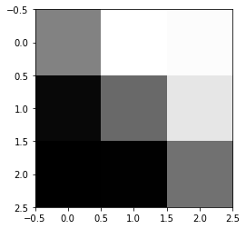
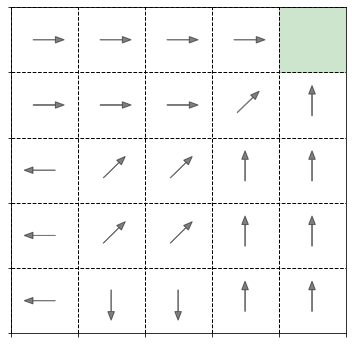

This page was generated from notebooks/L1/2_ValueIteration.ipynb.

Q-value iteration algorithm for the grid world in the experiment¶
[1]:
import numpy as np
import matplotlib.pyplot as plt
import matplotlib.patches as patches
[2]:
length = 5
states=length**2
actions=8
# rewards
Rbound = -1
Rtarget = 5
Rnormal = -1
# transition probabilities for all of the 8 actions
a =0.94
ab = (1-a)/2
b = 0.47
c=(1-2*b)
T=np.array([
[a,ab,0.0,0.0,0.0,0.0,0.0,ab], # action 0
[b,c,b,0.0,0.0,0.0,0.0,0.0], # action 1
[0.0,ab,a,ab,0.0,0.0,0.0,0.0], # action 2
[0.0,0.0,b,c,b,0.0,0.0,0.0], # action 3
[0.0,0.0,0.0,ab,a,ab,0.0,0.0], # action 4
[0.0,0.0,0.0,0.0,b,c,b,0.0], # action 5
[0.0,0.0,0.0,0.0,0.0,ab,a,ab], # action 6
[b,0.0,0.0,0.0,0.0,0.0,b,c] # action 7
])
# mapping which state is accessible from a certain state, -1 is for boundary
acc_state=[
[1,6,5,-1,-1,-1,-1,-1,-1], # from 0
[2,7,6,5,0,-1,-1,-1], # from 1
[3,8,7,6,1,-1,-1,-1], # from 2
[4,9,8,7,2,-1,-1,-1], # from 3
[-1,-1,9,8,3,-1,-1,-1], # from 4
[6,11,10,-1,-1,-1,0,1], # from 5
[7,12,11,10,5,0,1,2], # from 6
[8,13,12,11,6,1,2,3], # from 7
[9,14,13,12,7,2,3,4], # from 8
[-1,-1,14,13,8,3,4,-1], # from 9
[11,16,15,-1,-1,-1,5,6], # from 10
[12,17,16,15,10,5,6,7], # from 11
[13,18,17,16,11,6,7,8], # from 12
[14,19,18,17,12,7,8,9], # from 13
[-1,-1,19,18,13,8,9,-1], # from 14
[16,21,20,-1,-1,-1,10,11], # from 15
[17,22,21,20,15,10,11,12], # from 16
[18,23,22,21,16,11,12,13], # from 17
[19,24,23,22,17,12,13,14], # from 18
[-1,-1,24,23,18,13,14,-1], # from 19
[21,-1,-1,-1,-1,-1,15,16], # from 20
[22,-1,-1,-1,20,15,16,17], # from 21
[23,-1,-1,-1,21,16,17,18], # from 22
[24,-1,-1,-1,22,17,18,19], # from 23
[-1,-1,-1,-1,23,18,19,-1] # from 24
]
initialize the Q-matrix¶
[3]:
Q=np.full((25,8),0.0)
[4]:
for i in range(states):
for j in range(actions):
Q[i,j]=np.random.rand()-0.5
do the Q-matrix value iteration¶
[5]:
gamma=0.8
n_iterations=100
qsum=[]
for iteration in range(n_iterations):
Q_prev=Q.copy()
for s in range(states-1):
for a in range(actions):
tmp=0
for i in range(actions): # sum over all s_prime
if acc_state[s][i]==-1:
tmp=tmp+T[a,i]*Rbound
else:
if acc_state[s][i]==24:
tmp=tmp+T[a,i]*Rtarget
else:
tmp=tmp+T[a,i]*(Rnormal + gamma*np.max(Q_prev[acc_state[s][i]]))
Q[s,a]=tmp
if np.sum(Q_prev-Q) != 0: # show convergence
print(np.sum(Q_prev-Q))
qsum.append(np.sum(Q_prev))
114.7636663732932
89.4125954831398
5.11309374485754
-40.037766932477545
-39.37162348216722
-14.516368242987284
-2.453821668238308
-0.48376819725391546
-0.018209377300460287
-0.0005980558998777627
-1.8218081861282043e-05
-5.29987727523884e-07
-1.49457997714042e-08
-4.121369426290933e-10
-1.1186412907093768e-11
-3.0953017926549364e-13
-7.327471962526033e-15
get the policy¶
[6]:
policy=np.argmax(Q,axis=1)
plot Q-matrix entries for 1 state¶
[7]:
image=np.zeros([15,15])
[8]:
for i in range(5):
for j in range(5):
state=i*5+j
im=np.zeros([3,3])
im[2,0]=Q[state,3]
im[1,0]=Q[state,4]
im[0,0]=Q[state,5]
im[2,1]=Q[state,2]
im[0,1]=Q[state,6]
im[2,2]=Q[state,1]
im[1,2]=Q[state,0]
im[0,2]=Q[state,7]
image[i*3:i*3+3,j*3:j*3+3]=im
[9]:
print(image.min(),image.max())
-2.267319703986375 4.754098360655737
[10]:
#plt.imshow(image,cmap='gray')
[11]:
state=13
im=np.zeros(9)
im[0]=Q[state,3]
im[1]=Q[state,2]
im[2]=Q[state,1]
im[3]=Q[state,4]
im[5]=Q[state,0]
im[6]=Q[state,5]
im[7]=Q[state,6]
im[8]=Q[state,7]
plt.imshow(im.reshape(3,3),cmap='gray')
print(Q[state])
[ 1.12805855 1.32650454 1.35377049 0.22832548 -0.8682384 -0.9486302
-0.93153283 0.07585799]

plot the policy¶
[12]:
f,ax=plt.subplots(1,figsize=(6,6))
dd={'0':[2,0],'1':[np.sqrt(2),np.sqrt(2)],'2':[0,2],'3':[-np.sqrt(2),np.sqrt(2)],'4':[-2,0],'5':[-np.sqrt(2),-np.sqrt(2)],'6':[0,-2],'7':[np.sqrt(2),-np.sqrt(2)]}
f=plt.gca()
i=0
for y in range(3,30,6):
for x in range(3,30,6):
if policy[i]!=-1:
vec=dd[str(policy[i])]*2
if i!=24:
plt.arrow(x-vec[0]/2, y-vec[1]/2, vec[0], vec[1], fc="k", ec="k",head_width=0.6, head_length=0.8, width=0.01 ,alpha=0.5)
else:
rect=patches.Rectangle((x-3,y-3), 6,6,color='green',alpha=0.2)
ax.add_patch(rect)
else:
rect=patches.Rectangle((x-3,y-3), 6,6,color='red',alpha=0.2)
ax.add_patch(rect)
i=i+1
plt.xticks(np.arange(0, 31, step=6))
plt.yticks(np.arange(0, 31, step=6))
plt.xlim(0,30)
plt.ylim(0,30)
plt.grid(lw=1,color='k',ls='--')
f.axes.xaxis.set_ticklabels([])
f.axes.yaxis.set_ticklabels([])
plt.show()

[13]:
Q[20]
[13]:
array([-0.22946457, -0.61575639, -1. , -1. , -1. ,
-1.35025635, -1.69846448, -0.96191632])
[ ]: